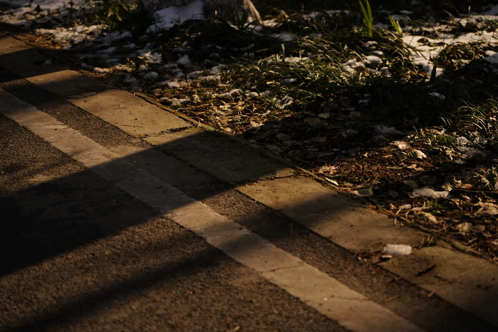
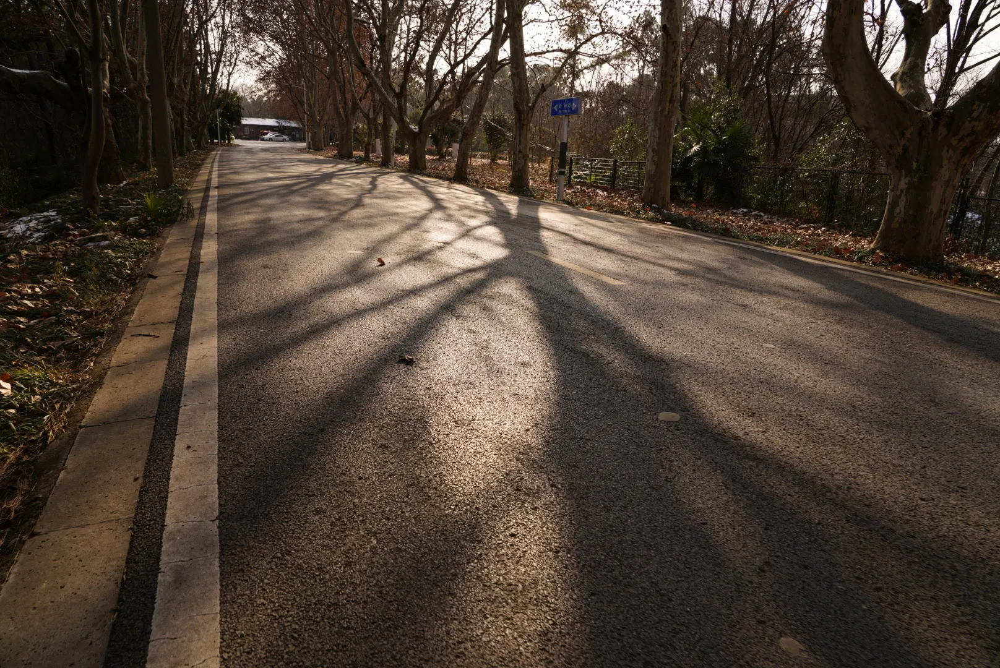
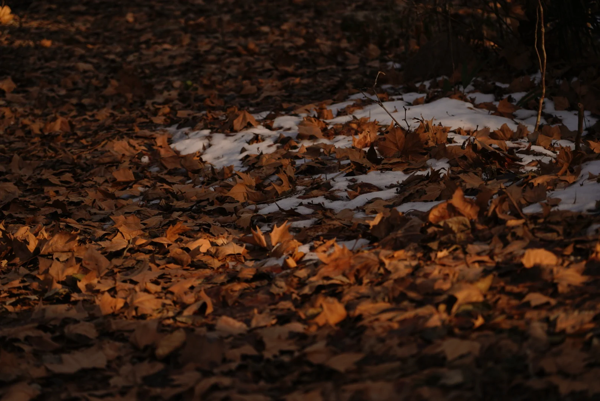
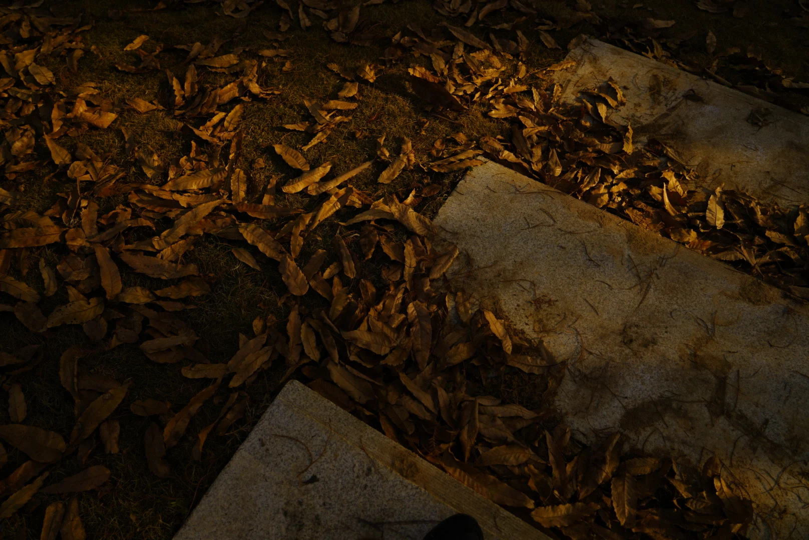
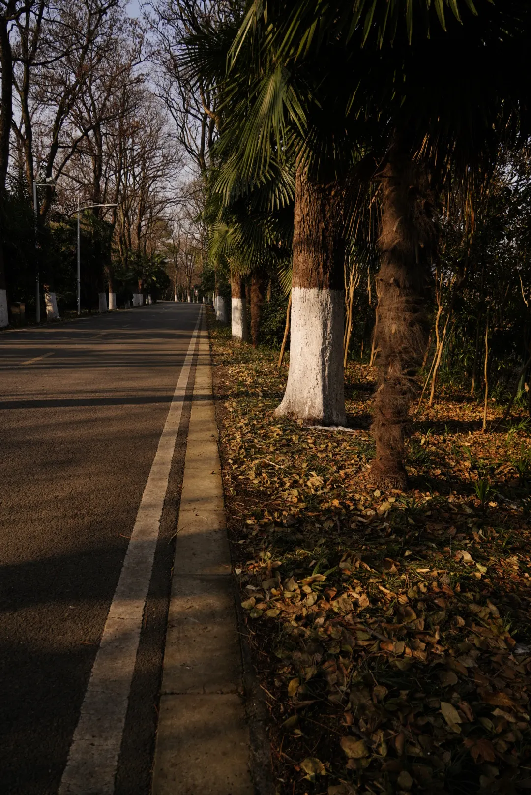
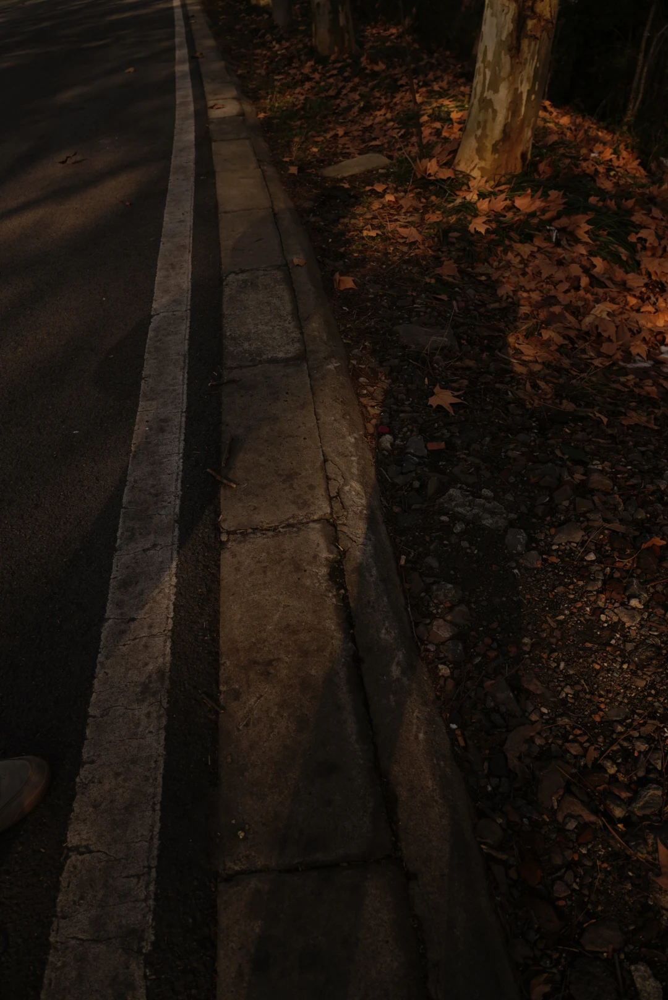
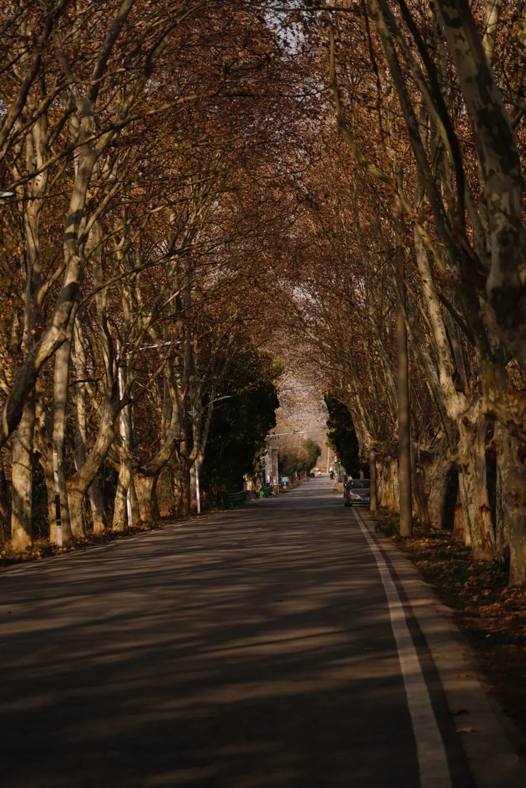
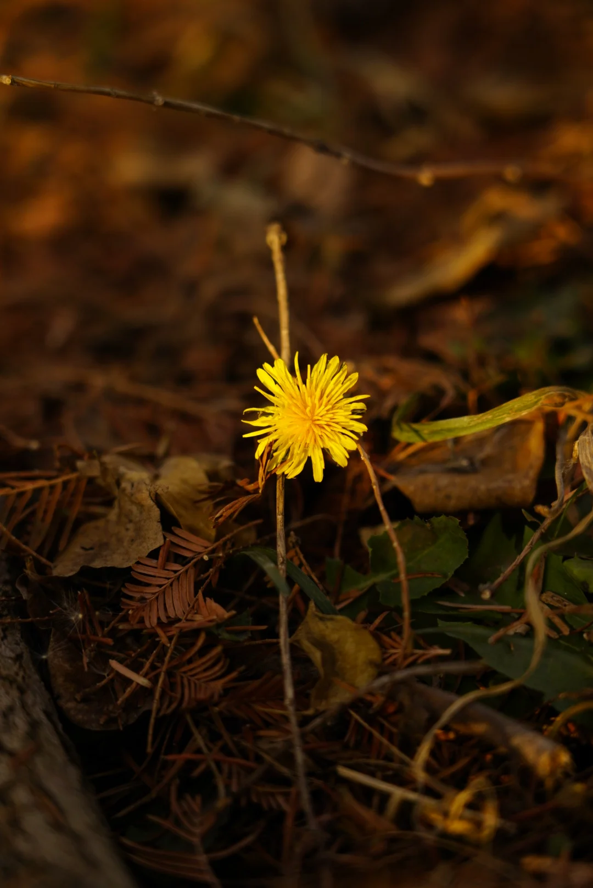

Photography
A Winter's Light
In the winter of 2023, I went somewhere specifically to take photographs for the first time. Not casually, not on the way to somewhere else. I had an image in my head, and I wanted to see if I could pull it out into the real world.
The location was a lake and forest on the grounds of the Chinese Academy of Sciences campus in Hefei. The winter light sat low and warm. The trees had lost most of their colour but kept their structure. The water was still. I shot the whole series with low exposure and pushed saturation, not to document what was there, but to close the gap between what I saw and what I had imagined. When the frame in the viewfinder started matching the one in my head, I understood what photography meant to me. Not recording. Expression.
These are not my most technically accomplished photographs. Some of the compositions I would approach differently now. But I have included everything from that day, including the ones that did not quite work, because that is what a beginning looks like.








